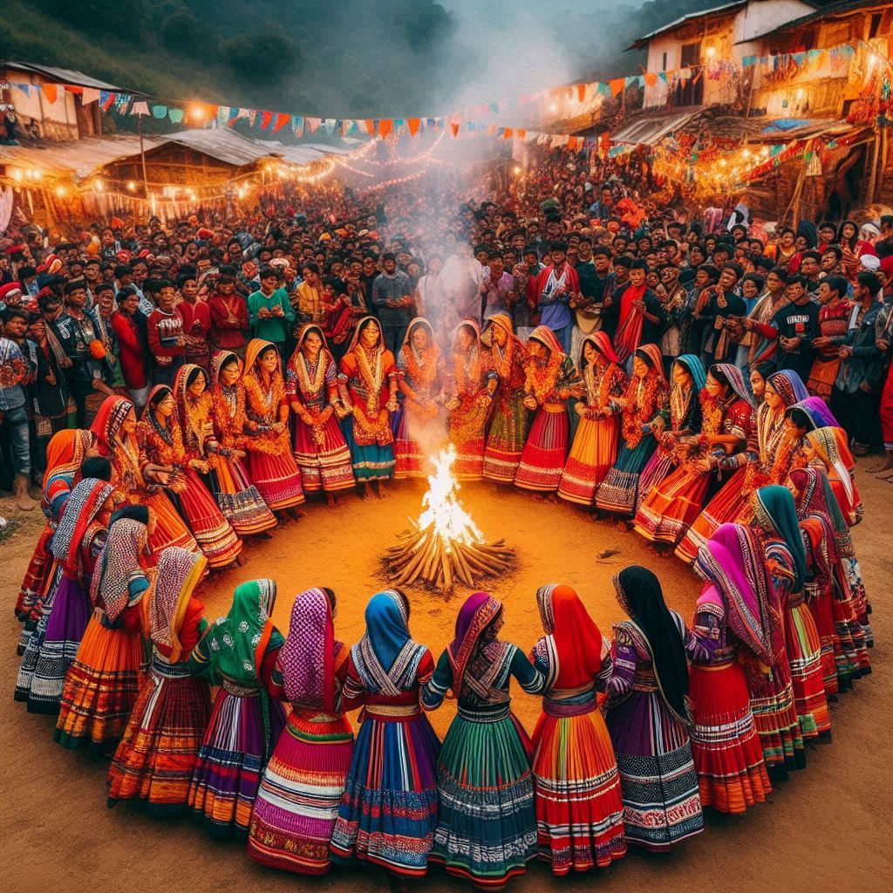
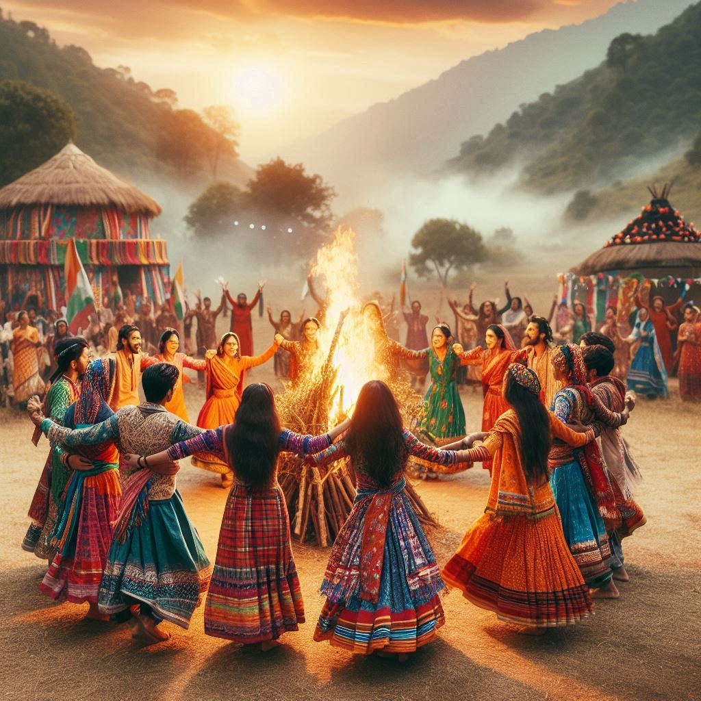

The traditions of Chhattisgarh are a rich tapestry woven from its diverse cultures, tribal influences, and
historical legacies. The state is known for its unique customs, rituals, and practices that reflect the
lifestyle and values of its people. Here’s an overview of the traditions in Chhattisgarh:
1. Tribal Heritage
- Diverse Tribes: Chhattisgarh is home to various tribal communities, including the Gonds,
Baigas, Oraons, and Murias, each with its own distinct traditions, languages, and lifestyles. Tribal
traditions are deeply rooted in nature and emphasize harmony with the environment.
- Rituals and Beliefs: Many tribal communities practice animism, believing in the spirits of
nature and ancestors. Rituals often involve offerings to deities and spirits to seek blessings for a
good harvest or protection from harm.
2. Festivals
- Bastar Dussehra: This unique festival, celebrated for over 75 days, showcases the rich tribal
culture of the Bastar region. It includes traditional dances, music, and rituals honoring local
deities, particularly the goddess Danteshwari. The festival is marked by processions, fairs,
and various cultural performances.
- Hareli: Celebrated primarily by the agricultural community, Hareli marks the beginning of the
rainy season. Farmers worship agricultural tools and seek blessings for a bountiful harvest.
Traditional rituals, including folk songs and dances, are an integral part of this festival.
- Tihar: This festival, also known as Diwali, is celebrated with much enthusiasm in
Chhattisgarh. People clean and decorate their homes, perform rituals to worship deities, and prepare
traditional sweets and snacks.
3. Traditional Music and Dance
- Folk Music: Chhattisgarh boasts a vibrant folk music scene, with songs reflecting the daily
lives, struggles, and celebrations of the people. Traditional instruments like mandar,
dhol, and bansuri are commonly used.
- Dance Forms: Traditional dance forms such as Panthi, Raut Nacha, and
Karma are performed during festivals and ceremonies. Each dance form has its own
significance, often depicting themes of love, agriculture, and tribal life.


4. Handicrafts and Art
- Traditional Crafts: Chhattisgarh is renowned for its handicrafts, including bell metal
crafts, terracotta pottery, bamboo work, and weaving. These crafts reflect the artistic skills
passed down through generations and are often used in daily life and rituals.
- Warli Art: This tribal art form, characterized by simple, monochromatic designs depicting
daily life and nature, is widely practiced in Chhattisgarh. Warli paintings are often used to adorn
homes and during festivals.
5. Cuisine and Culinary Traditions
- Traditional Dishes: Chhattisgarhi cuisine includes a variety of dishes made from locally
sourced ingredients. Staples include rice, lentils, and vegetables, often prepared with traditional
spices. Dishes like chila (a rice pancake), fara (rice dumplings), and thethri
(a snack made from rice flour) are popular.
- Festive Foods: During festivals and celebrations, special dishes are prepared, reflecting the
local flavors and culinary traditions. Sweets made from jaggery, rice flour, and coconut are common
during festive occasions.
6. Social Structure and Values
- Community Living: The people of Chhattisgarh value community living and often engage in
collective activities such as farming, festivals, and social gatherings. This sense of community is
crucial for their social structure and cultural identity.
- Respect for Nature: Traditional beliefs emphasize the importance of nature and its
preservation. Many customs involve rituals that honor the earth, rivers, and forests, highlighting
the people's deep connection to their environment.
Conclusion
The traditions of Chhattisgarh reflect its rich cultural diversity, deeply rooted in tribal heritage
and communal values. From vibrant festivals and traditional music to unique handicrafts and culinary
delights, the state's customs and practices showcase the lifestyle and beliefs of its people. These
traditions not only contribute to the state's cultural identity but also play a vital role in preserving
its heritage for future generations.